On 2nd Feb, I launched a web dashboard for tracking the spread of recent coronavirus (COVID-19) outbreak, which provides a real-time view of global confirmed, recovered, and death cases.
It so far has attracted more than 17,000 active users and was shared almost 3,500 times on social media. I am really glad that I could contribute my skillsets for helping people in this global emergency and especially want to thank those who support the running of this web dashboard.
Back to the dashboard itself, apparently, information displayed on it are designed to be effective and easily understood. They are always updated in a timely manner and only a limited amount of historical data are provided (i.e. region-wide historical data). This enables users to get the most current status of their cared regions.
However, other than real-time data displayed on the dashboard, more insight can be still extracted from these data. Today, I will share with you some insight distilled from all data collected so far. This may be useful to raise more public awareness and further facilitate advance preparedness and slow down the spread.
As usual, if you want to practice the code, the notebook can be accessed from my Github.
Before we get to individual patterns, it is better to use a recent popular cartoon (Figure 1) to explain what patterns we are expecting to achieve to contain the virus and slow down its spread. 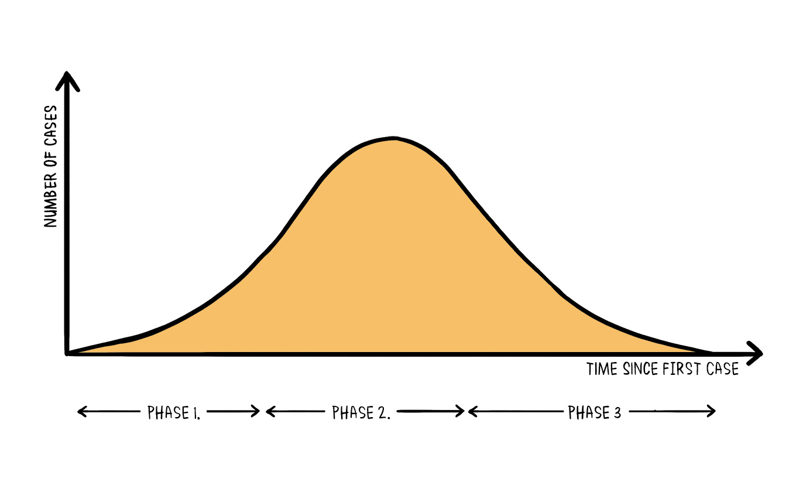 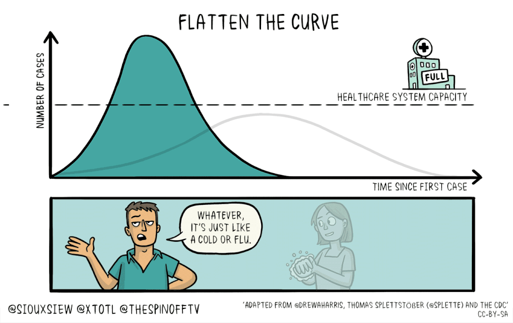 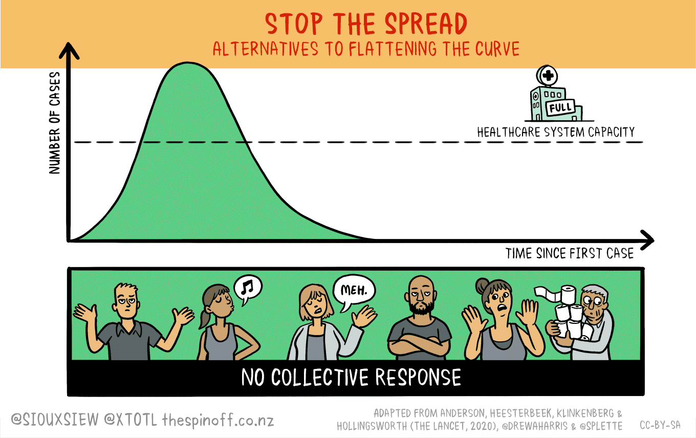
The number of cases during the development of an epidemic event can be illustrated by the epidemic curve (Figure 1, left panel), which includes three phases. At this moment, the majority of countries are in phase one with more and more cases being confirmed every day.
The ideal situation we want to see is to slow down phase one and flatten the curve so that our health system has enough time to be prepared and most importantly, sufficient resources for every vulnerable case (Figure 1, middle panel). To achieve this situation, strict measures need to be taken, including travel restriction, self-isolation, social distancing and personal hygiene.
For those countries at the very early stage of the outbreak, there is another aggressive option which is to stop the spread ((Figure 1, right panel)) by taking full measures quickly and proactively.
With these in mind, let us take a look of the individual epidemic curves of different countries/regions. The data used here were collected from 21 Jan to 14 Mar. To be able to see patterns, only those countries/regions with more than 50 confirmed cases were included in this analysis.
As shown in Figure 2, until the end of 14 Mar, there are in total of 49 countries/regions with more than 50 confirmed cases. When plot the daily incremental case numbers against date (Figure 2), we can clearly see different patterns. For example, mainland China (Figure 2, top right corner) is already in phase 3 by the definition of the epidemic curve while most other regions are still in phase 1 or phase 2. 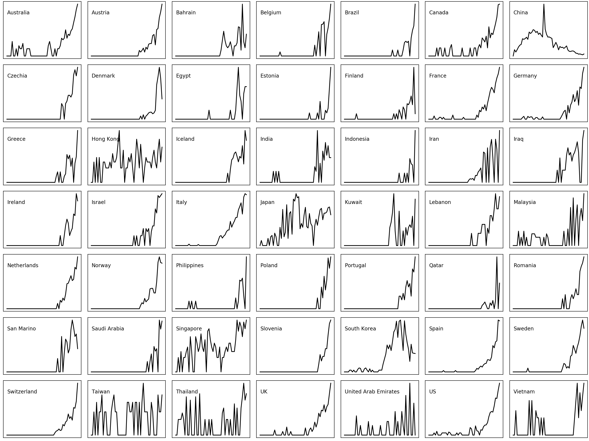 #### Can we classify the incremental patterns? Nevertheless, visual differentiation of these many curves is rather difficult. It is better to classify these curves into clusters, in which similar curves are classified as the same group. Here, I combined Principle Co-ordinates Analysis (PCoA) with k-mean clustering to plot similarities of countries/regions incremental patterns on a 2-D dimension and classify them into groups. In a nutshell, nearby circles (i.e countries/regions) in 2-D ordination should have similar growth patterns, circles which are far apart from each other have few patterns in common.
NOTE! Since we only interested in the patterns, the effect of data size should be minimised, for example, daily incremental numbers in mainland China are orders higher than that of many other countries. We do not want these differences to be included in our analysis. The solution > here is to first transform data as square root and normalise them as numbers between zero and one. In doing so, we only catch up the variance in the patterns when calculating similarities between different countries/regions.
Figure 3
As we can see from the ordination (Figure 3), there are 5 groups represented by different colours (circle size denotes confirmed cases number). Mainland China forms its own cluster (Dark green). UAE, Thailand, Taiwan, South Korea, Hong Kong, Japan, and Singapore form another cluster (Light green). Iran leads its group with Iraq, Malaysia, Bahrain, India, Vietnam, and Kuwait (Blue). Most European countries together with the US, Canada and Australian form a big cluster (Red). Lastly, Finland, Philippines, Indonesia, Estonia, and Qatar are classified as the same group.
With these classifications, we can now gain more information from the curve matrix (Figure 4), such as which countries/regions have similar growth patterns and which stage they are in.
Figrue 4
Mainland China has now been in phase three by the definition of the epidemic curve. This is a good sign. However, we should know that these are built on top of people’s huge sacrifice via pausing the entire nation during this year’s festive season (i.e. Chinese New Year), staying at home, minimising outdoor activities and avoiding mass gatherings, and wearing face masks if going out. In addition, they built two new hospitals in a matter of weeks and sent about 43 thousands medical workers to Wuhan.
The question left to us to consider is that if there are resources in this scale to do what China did when the outbreak comes to many other countries/regions or we should act quickly and proactively to slow down and even prevent its coming.
These bring us to the second clusters (Light Green). These regions all recorded their first confirmed cases in very early date, however, maintained relatively flat curves. These could be attributed to their timely deployment of well-thought-out steps designed to contain the spread of coronavirus. Again, this highlights the necessity of acting quickly and proactively.
You might notice that South Korea is also within this group. This is mainly because the high peak popped up later in the curve was trigger by a so-called Patient 31, who was a super-spreader and passed it to thousands of other people. Fortunately, South Korea has almost passed the peak and being back to a reasonable level.
Countries within groups of blue, yellow and red are all in phase one but with slightly different curve styles. Specifically, the blue group featured by a mixture of early flatten and late climbing curves (Figure 5). 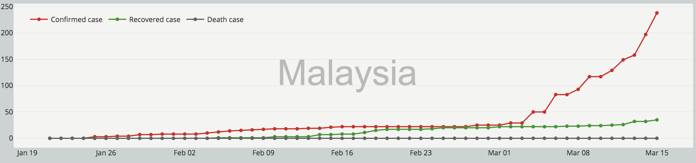 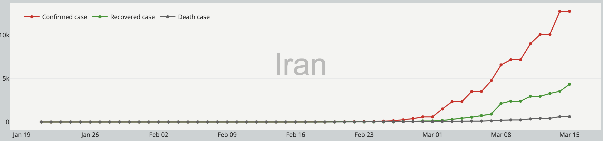
Countries of the yellow group, however, mostly possess sudden jump in confirmed case numbers (Figure 6), which may indicate a failure of containment. 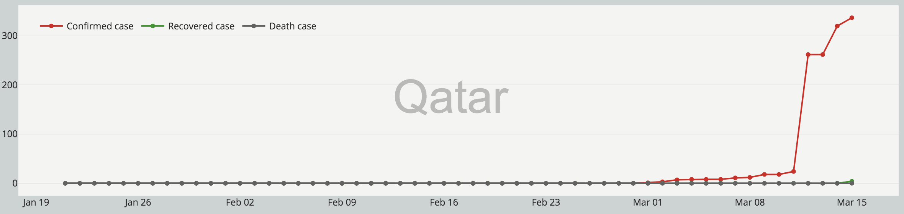 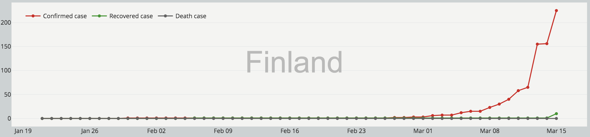
The red group are all typical exponential growth curves, which are the least wanted situation. These curves may suggest unprepared systems before things getting worse. 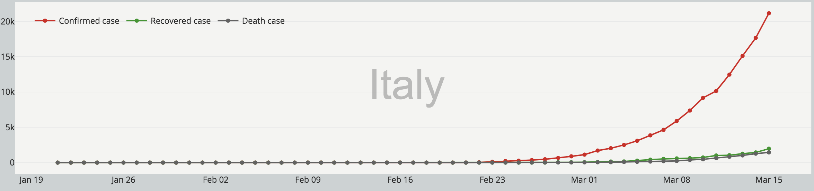 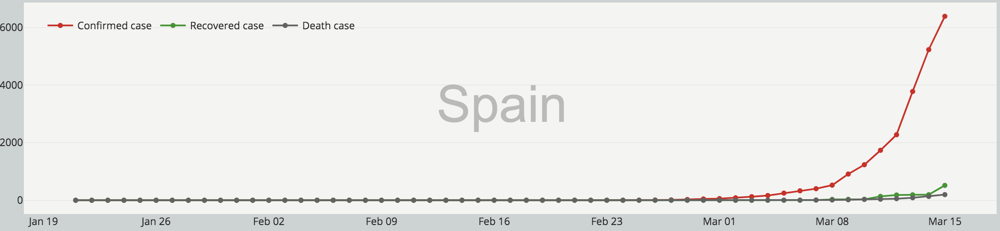
As stated in the beginning, here we only examined the growth patterns without considering scales. Clearly, not every country within the red group has a high confirmed cases number as what recorded in Italy, Spain or Germany (Figure 8). Having said that, these numbers will definitely climb exponentially if one does not take serious measures. The alarm to those countries is to take action before it is too late. 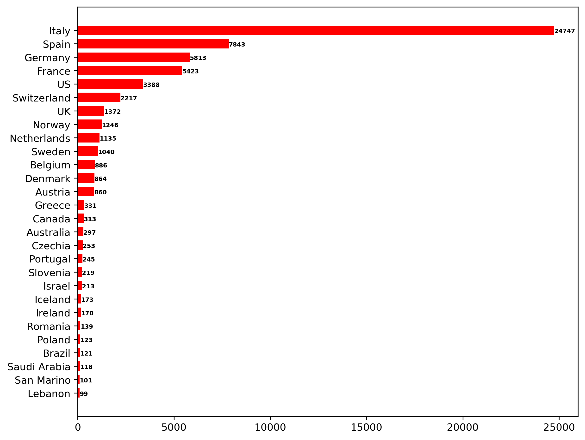
“Life is a sum of all our choice.”
Albert Camus
That’s all folks. As always, I welcome feedback, constructive criticism, and hearing about your data science projects. I can be reached on Linkedin, and now on my website as well.